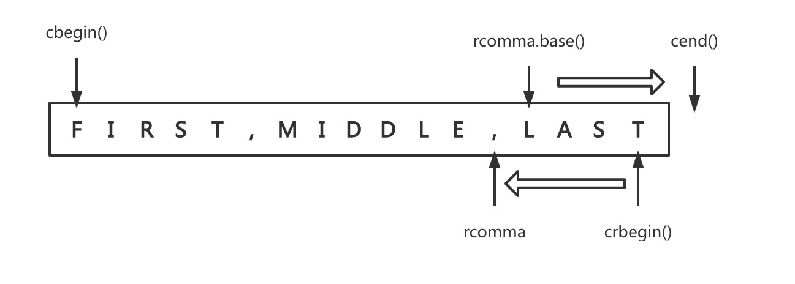

6.4 标准库类型：迭代器¶
简介¶
所有标准库类型都可以使用迭代器，但是其中只有少数几种才同时支持下标运算符，有迭代器的类型都拥有begin()和end()的成员函数：
/*
* b和e类型相同
* 1) b: 表示v的第一个元素
* 2) e: 尾后迭代器, 表示尾元素的下一个位置
*/
auto b = v.begin(), e = v.end();
Tips：如果容器为空，那么
begin()和end()返回的都是尾后迭代器。
迭代器类型¶
就像不知道string或vector的size_type成员到底是什么类型一样，一般情况下我们也不知道（其实是无须知道）迭代器的精确类型。拥有迭代器的标准库类型使用iterator和const_iterator来表示迭代器类型：
/* 可读写元素的迭代器 */
vector<int>::iterator it1;
string::iterator it2;
/* 只能读而不能写的迭代器 */
vector<int>::const_iterator it3;
string::const_iterator it4;
迭代器运算符¶
1. 普通运算符¶
Tips：因为
end()返回的迭代器类并不实际指向某个元素，所以不能对其进行递增或者解引用的操作。
*iter // 返回迭代器所指元素的引用
iter->mem // 解引用迭代器并获取该元素名为mem的成员, 等价于(*iter).mem
++iter // 令迭代器指向下一个元素
--iter // 令迭代器指向上一个元素
iter1 == iter2 // 如果两个迭代器指向同一个元素或者是同一个容器的尾后迭代器, 那么相等
iter1 != iter2
2. begin和end运算符¶
前面我们提到迭代器有begin和end运算符，它们返回的具体类型取决于对象是否是常量。如果对象是常量，那么begin和end返回const_iterator，否则返回iterator。
有时候这种默认的行为并非我们想要，如果对象只需读操作而无需写操作时最好使用常量类型，C++11新标准引入了两个新函数用于返回const_iterator：
vector<int> vi;
auto it = vi.cbegin(); // it的类型是vector<int>::const_iterator
迭代器运算¶
// 迭代器加上(减去)一个整数仍得到一个迭代器, 指向的新位置与原来相比向前(向后)移动了n个位置, 结果迭代器指向容器内的一个元素或者尾后元素
iter + n
iter - n
iter += n
iter -= n
// 等于两个迭代器的距离, iter2向前移动n个元素后得到iter1
// 返回值是类型为difference_type的带符号整型数
iter1 - iter2
// 迭代器的关系运算符
>、>=、<、<=
再探迭代器类型¶
除了前面提到的为每个容器定义的迭代器之外，标准库还在头文件iterator中定义了额外几种迭代器：
插入迭代器：这些迭代器被绑定到一个容器上，可以用来向容器插入元素
流迭代器：这些迭代器被绑定到输出或者输出流上，可以用来遍历所关联的IO流
反向迭代器：这些迭代器向后而不是向前移动，除了
forward_list之外的标准库容器都有反向迭代器移动迭代器：这些专用的迭代器不是拷贝其中的元素，而是移动它们
1. 插入迭代器¶
插入迭代器是一种“迭代器适配器”，它接受一个容器生成一个迭代器，能实现向给定容器添加元素。支持的操作如下：
| 操作 | 含义 | 备注 |
|---|---|---|
it = t |
在it指定的位置插入t |
假设c是it绑定的容器，依赖于插入迭代器的不同种类，此赋值会分别调用c.push_back(t)、c.push_front(t)或者c.insert(t, p)，其中p为传递给inserter的迭代器位置 |
*it、++it、it++ |
此操作虽然存在，但是不会做任何事情，每个操作都返回it |
插入迭代器有三种类型：
back_inserter：创建一个使用push_back的迭代器front_inserter：创建一个使用push_front的迭代器inserter：创建一个使用inserter的迭代器，此函数接受第二个参数（指向给定容器的迭代器），元素将被插入到给定迭代器所表示的元素之前
2. iostream迭代器¶
istream_iterator读取输入流，ostream_iterator向一个输出流写入数据，这些迭代器将它们对应的流当做一个特定类型的元素序列来处理。通过使用流迭代器，我们可以使用泛型算法从流对象读取数据以及向其写入数据。
2.1 istram_iterator操作¶
istream_iterator<int> in_iter(cin); // 从cin读取int
istream_iterator<int> eof; // istream尾后迭代器
while (in_iter != eof) {
// 后置递增运算读取流, 返回迭代器的旧值
// 解引用迭代器, 获得从流读取的前一个值
vec.push_back(*in_iter++);
}
我们可以将程序重写为如下形式，它体现了istream_iterator更有用的地方：
istream_iterator<int> in_iter(cin), eof;
vector<int> vec(in_iter, eof);
istream_iterator提供的操作如下：
| 操作 | 含义 |
|---|---|
istream_iterator<T> in(is) |
in从输入流is都读取类型为T的值 |
istream_iterator<T> end |
读取类型为T的值的istream_iterator迭代器，表示尾后位置 |
in1 == in2in1 != in2 |
in1和in2必须读取相同类型，如果它们都是尾后迭代器，或绑定到相同的输入，则两者相等 |
in->mem |
与(*in).mem的含义相同 |
++in, in++ |
使用元素类型定义的>>运算符从输入流中读取下一个值，前置版本返回一个指向递增后迭代器的引用，后置版本返回旧值 |
2.2 ostream_iterator¶
我们可以对任何具有输出运算符（<<运算符）的类型定义ostream_iterator。当创建一个ostream_iterator时，我们可以提供（可选的）第二参数，它是一个C风格字符串，在输出每个元素后都会打印此字符串。
| 操作 | 含义 |
|---|---|
ostream_iterator<T> out(os) |
out将类型为T的值写到输出流os中 |
ostream_iterator<T> out(os, d) |
out将类型为T的值写到输出流os中，每个值后面都输出一个d，d指向一个空字符结尾的字符数组 |
out = val |
用<<运算符将val写入到out所绑定的ostream中 |
*out、++out、out++ |
这些运算符是存在的，但是不会对out做任何事情，每个运算符都返回out |
3. 反向迭代器¶
反向迭代器就是在容器中从尾元素向首元素反向移动，递增一个反向迭代器++it会移动到前一个元素，递减一个迭代器--it会移动到下一个元素。
Tips：除了
forward_list外，其他容器都支持反向迭代器。
反向迭代器可以使得我们用算法透明地向前或者向后处理容器，比如向sort传递一对反向迭代器将vector降序：
// 升序
sort(vec.begin(), vec.end());
// 降序
sort(vec.rbegin(), vec.rend());
我们可以通过reverse_iterator的base成员函数将其转换为一个普通迭代器，但是他们指向的不是同一元素了。举个例子，我们需要在一个逗号分隔的string中打印最后一个元素：
string line = "FIRST, MIDDLE, LAST";
// rcomma会指向line中最后一个逗号，如何找不到则指向line.crend()
auto rcomma = find(line.crbegin(), line.crend(), ',');
// 如果我们要打印这个单词, 那么会反向输出TSAL，因为反向迭代器会反向遍历line
cout << string(line.crbegin(), rcomma) << endl;
// 我们将rcomma转化为普通迭代器以便在line中正向移动
cout << string(rcomma.base(), line.cend()) << endl;
需要注意的是
[line.crbegin(), rcomma)和rcomma.base(), line.cend()指向的是同一个元素范围。因此rcomma和rcomma.base()必须指向相邻的位置而非同一个位置，crbegin()和cend()也是相邻位置。

4. 移动迭代器¶
新标准库定义了一种移动迭代器move iterator适配器，一个移动迭代器通过改变迭代器的解引用运算符来适配此迭代器。一般来说，一个迭代器的解引用运算符返回一个指向元素的左值，移动迭代器的解引用运算符生成一个右值引用。
TIps：下例中
uninitialized_copy对输入序列中每个元素调用construct来讲元素“拷贝”到目的位置，此算法使用迭代器的解引用运算符从输入序列中提取元素。由于我们传递给它的是移动迭代器，因此解引用运算符生成的是一个右值引用，这意味着construct将使用移动构造函数来构造元素。
void StrVec::reallocate() {
// 分配大小两倍于当前规模的内存空间
auto newcapacity = size() ? 2 * size() : 1;
auto first = alloc.allocate(newcapacity);
// 移动元素
auto last = uninitialized_copy(make_move_iterator(begin()),
make_move_iterator(end()),
first);
// 释放旧空间
free();
// 更新指针
element = first;
first_free= last;
cap = elements + newcapacity;
}